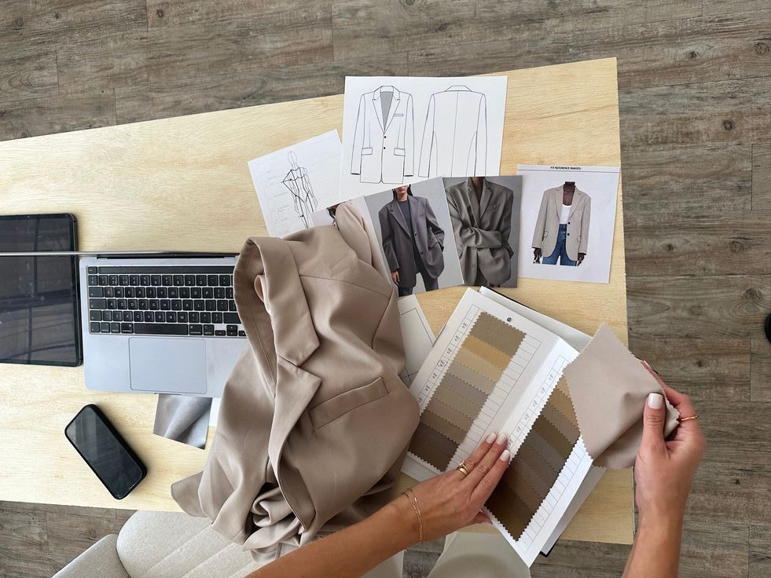

User Experience Design
User Experience Design
for fashion App
Project Overview
Merancang pengalaman pengguna untuk aplikasi fashion digital yang ditujukan bagi pecinta mode modern. Tujuan utama proyek ini adalah menciptakan antarmuka yang estetis, mudah digunakan, dan inspiratif, yang memungkinkan pengguna menjelajahi tren fashion, memadupadankan gaya pribadi, serta berbelanja dengan lebih menyenangkan dan efisien.
Research & Discovery
Proses penelitian dilakukan untuk memahami perilaku pengguna dan tren mode terkini,meliputi:
- Wawancara mendalam dengan 70+ pengguna dari berbagai kelompok usia dan gaya hidup
- Analisis kompetitor terhadap 10 aplikasi fashion populer (Zalora, Zara, Shein, dll.)
- Observasi pengguna dalam memilih dan mengombinasikan outfit digital
- Uji prototipe awal untuk mengukur kenyamanan navigasi dan kepuasan estetika antarmuka
UX Design Strategy
Pendekatan desain difokuskan untuk menciptakan keseimbangan antara fungsi dan estetika fashion, dengan menonjolkan:
- Desain antarmuka yang bersih, feminin, dan modern
- Visual outfit yang interaktif, menampilkan kombinasi gaya berdasarkan preferensi pengguna
- Sistem rekomendasi tren fashion personal berbasis gaya pribadi
- Navigasi sederhana dengan hierarki visual yang mudah dipahami
Key Outcomes
Hasil utama dari implementasi desain UX ini meliputi:
- Peningkatan retensi pengguna sebesar 65% dalam tiga bulan pertama
- Penurunan waktu pencarian outfit sebesar 45%, berkat navigasi yang lebih efisien
- Kepuasan pengguna meningkat hingga 80%, berdasarkan survei pengalaman
- Dinobatkan sebagai ‘Best Fashion UX Experience 2025’ oleh Creative Design Awards
Project Gallery